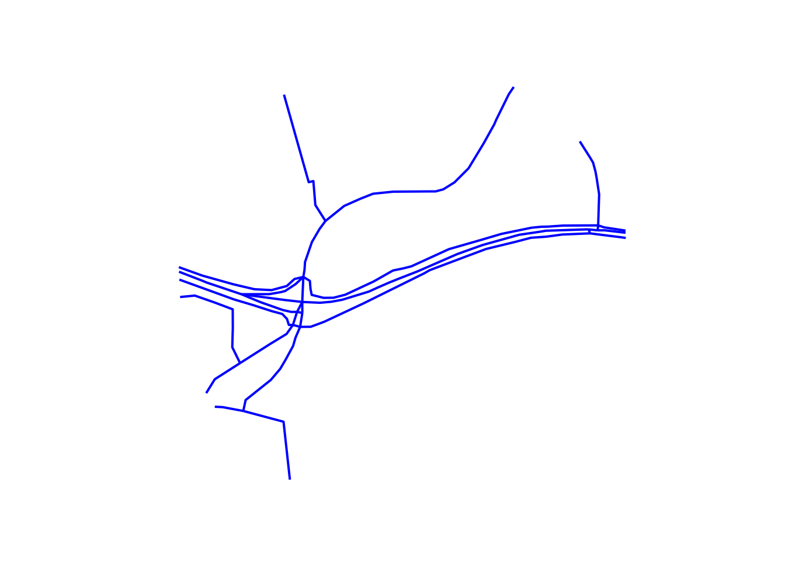
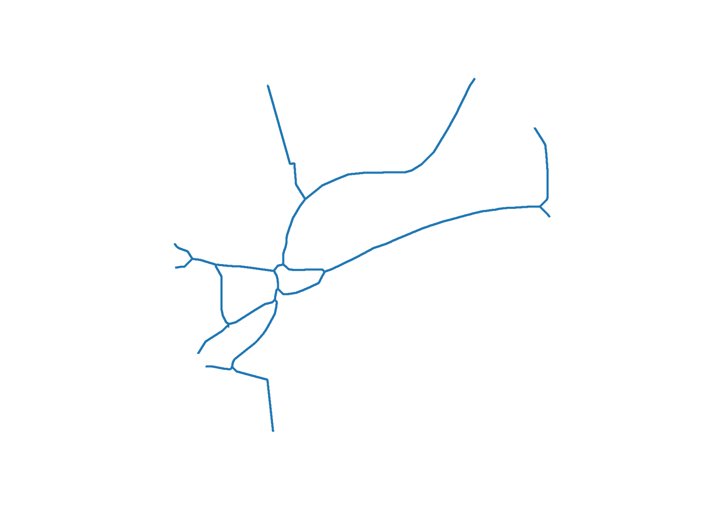

Route network simplification for transport planning
Will Deakin ![]()
Zhao Wang
Josiah Parry
Robin Lovelace
Abstract
Route network datasets are fundamental to transport models, serving as both inputs for analysis and outputs for visualisation and decision-making. The increasing complexity of route network data from sources like OpenStreetMap allows for more detailed modelling of sustainable transport modes such as walking and cycling. However, this level of detail can introduce challenges for the clear visualisation and interpretation of model results. A common problem is the representation of single transport corridors by multiple parallel lines, which can create visual clutter and obscure important patterns in transport flows. The purpose of the work presented in this paper is to provide a basis for computationally efficient analysis and visualisation of route networks for strategic transport planning, where intricate geometries—such as parallel or ‘braided’ linestrings—are unhelpful. We present and evaluate two distinct methods for simplifying complex route networks that are intended to be used as a ‘pre-processing’ step to speed-up and improve the results of strategic transport network analysis, modelling and visualisation workflows. First, we present skeletonization, an approach that uses ‘thinning’ of rasterized network data to extract a simplified representation of the network. Second, we present a Voronoi-based approach using Voronoi diagrams to identify centrelines. We demonstrate the practical application of these methods using the “Simplified network” layer in the Transport for Scotland funded Network Planning Tool, a publicly accessible resource at www.npt.scot. To support reproducible research, we implement the methods in the open-source parenx Python package, enabling their use alongside other open source tools for transport planning, research and educational applications.
1 Introduction
Datasets representing route networks are foundational to transport planning, serving a dual role as both inputs to and outputs from transport models. As inputs, they provide the digital representation of the physical world on which transport systems operate. As outputs, they are used to visualise the results of transport models, for example showing levels of predicted demand or network performance on specific routes. More specifically, transport network datasets are spatial networks composed of nodes (junctions) and edges (links or ways), where each edge has an associated cost, such as its length or travel time (Barthélemy 2011). In practice, these components are geographically located, with edges representing the physical infrastructure of the transport network, often enriched with attributes like the type of way (e.g., motorway, cycle path), its physical characteristics, and usage data such as daily traffic volumes. Accordingly, route network simplification can be applied to both input and output networks, aiming to reduce complexity while preserving the essential spatial structure and relevant attributes of the network.
The growing availability of high-resolution geographic datasets, from open sources including OpenStreetMap (OpenStreetMap contributors 2024) and government-funded mapping agencies, has enabled the creation of increasingly detailed maps. This trend, powered by advances in hardware and software, is beneficial for sustainable transport planning, which relies on accurate and detailed network information. However, the very intricacy of modern street network geometries can create significant problems. For transport model outputs to be useful to planners and the public, a clear and intuitive visual representation is crucial for identifying issues such as bottlenecks, congestion hotspots, and areas of poor accessibility. Consequently, network simplification has become a vital step in the transport planning workflow, aligning with established cartographic principles of ‘map generalization’ for pre-processing datasets according to the scale of analysis (Sutton 1998). Despite being a long-standing challenge, the simplification of networks for transport planning and other applications remains an active area of research.
Existing vector geometry simplification methods, such as the Douglas-Peucker and Visvalingam-Whyatt algorithms, are effective at reducing the number of vertices in a line and thus file sizes, but they do not address the problem of network complexity arising from multiple parallel lines representing a single real-world corridor (Liu et al. 2020; Magalhaes et al. 2014). Similarly, vector smoothing techniques can improve the aesthetic quality of network visualisations; however, they do not simplify the underlying network structure (Pradhan and Pradhan 2023; Duong 2022).
A more promising approach involves converting the linear network into an intermediate polygon (buffer) layer and then deriving a simplified centreline, or ‘medial axis’. This concept has been explored in various open-source software implementations (e.g. Smogavec and Žalik 2012; “Centerline - Crates.io: Rust Package Registry” 2023). Recent work in this area includes the neatnet Python package (Fleischmann, Vybornova, and Gaboardi 2024) and the parenx package (Deakin 2024), the latter of which forms the basis of the methods presented in this paper. Other related methods focus on identifying and removing specific types of network artefacts, such as small loops or ‘slivers’ between dual carriageways to simplify street blocks (M. Fleischmann and Vybornova, n.d.; Grippa et al. 2018). However, these methods often lack the flexibility to control the level of simplification.
While the focus of this paper is on route network simplification for transport planning, and applications to other fields are beyond its scope, it is worth noting prior research tackling the challenge of simplifying linear features in other domains. In hydrology, for example, researchers require simplified centrelines of rivers derived from datasets representing river banks for applications such as flood mapping and morphological analysis, with implementations in tools like the R package cmgo (Golly and Turowski 2017) and RivWidthCloud for Google Earth Engine (Yang et al. 2020). The riverdist R package also provides functionality to simplify braided river channels into a single path (Tyers 2016). The methods presented in this paper draw inspiration from these wider applications of linear feature simplification. More broadly, our approach is based on techniques that can be applied to any set of overlapping linear features where aggregation is desired, such as simplifying transport or other flow networks to create a consolidated route-view for capacity analysis or strategic modelling.
The aim of this paper is to articulate the problem of complex route networks, present solutions with implementations in open source software for reproducible research, and describe applications of the methods to support more effective transport planning. We proceed as follows: Section 2 outlines the problem of complex route networks. Section 3 presents methods for route network simplification alongside results based on the example datasets. Section 4 demonstrates the methods applied to a real transport network (Edinburgh, Scotland) and Section 5 concludes with a discussion of the results and future work.
2 Problem definition
The problem tackled in this paper is the simplification of complex route networks. This can be illustrated with reference to the Propensity to Cycle Tool for England (PCT) (Lovelace et al. 2017), the route networks of which are based on methods for aggregating multiple overlapping routes into a route network with non-overlapping linestrings (Morgan and Lovelace 2020). Implemented in the function overline() in the stplanr R package (Lovelace et al. 2017), the methods enable visualization of large transport networks and inform investment decisions in transport planning internationally (Lovelace et al. 2024; Félix, Moura, and Lovelace 2025). However, this ‘overline’ approach, without further processing, has limitations:
- Functionally redundant vertices are kept, leading to large file sizes and slow rendering.
- Parallel ways that are not merged.
The latter issue is particularly problematic for visualisation of transport networks, as shown in Figure 1. The left panel shows Otley Road with a flow value of 818 (Figure 1 (a)). The right panel, by contrast, shows three parallel ways parallel to Armley Road with flow values of 515 (shown), 288 and 47 (values not shown) (Figure 1 (b)). Although this section of Armley road has a higher cycling potential than the section of Otley Road shown (515 + 288 + 47 > 818), this is not clear from the visualisation.


3 Data and Methods
In this paper we use the two street networks discussed in the previous section to illustrate the methods. See the ‘parenex cookbook’ and Methods appendices for further details on the methods used in this paper and their application to alternative (railway based) datasets.
There are two main challenges that need to be overcome to simplify transport networks, in a way that preserves their value:
- Simplifying the geometry
- Assigning attributes to the simplified network
We address the geometric simplification first, describing skeletonization and then a Voronoi-based approach. The key contributions of the paper are the novel methods of image skeletonization, presented in Section 3.1, and simplification with Voronoi diagrams to identify central lines, covered in Section 3.2.
3.1 Simplification via skeletonization
The skeletonization approach generates a simplified network by buffering the network, applying an image skeletonization algorithm, and extracting lines segements from a raster of this buffer.
As a common first step, we buffer the lines in a projected coordinate system. We use a buffer size of 8 m in this paper. This value is informed by typical widths of a UK two-lane highway with an example for a typical 2-way road being specified in the Design Manual for Roads and Bridges (DMRB) as “min 4.8 m, max 8.8 m” and the minimum GB rail centre-line track separation of 3.26m, and two sections of 1.435m standard gauge. This parameter can be adjusted to suit the use case and local contexts, using the buffer parameter of the simplification functions.
In skeletonization, overlapping lines are identified, buffered, transformed into a raster image, the image processed through a thinning algorithm, and a skeletal representation of the original network produced (see Methods appendix for details). This skeletal structure preserves the overall extent and connectivity of the network, with a central line that follows the centre-line of the combined buffered area.
Specifically, we apply skeletonization only where more than one buffered line segment overlaps. To identify overlapping line-segments, the buffer is split at the end of each line-segment. The overlapping line-segments are then buffered while retaining the remaining disjoint lines.
To mitigate rasterization artefacts introduced by this step, we increase resolution via a uniform affine scale before thinning. As detail is lost in transforming of the geometry to an image buffer or raster, more detail can be retained by using an affine transformation to increase the number of points in the buffer prior to skeletonization and reducing scale when creating the simplified linear geometric representation. This scale operation is a uniform affine scale transformation applied to increase the detail contained in the raster image. An increase in scale reduces undulation but at the cost of longer processing time and increased memory, which varies as the square of scale value. This transformation is scaled to ensure that the projected coordinate geometry of the network aligns accurately with the corresponding dimensions of the scaled raster image.
Additionally, we pre-process the raster to eliminate small holes that appear where buffered lines run parallel or intersect at shallow angles. The skeletonization algorithm is then applied to the raster image, yielding a skeletal raster image that is converted back into a linear vector geometry, completing the vector-to-raster-to-vector geometry transformation (see Methods appendix for details).
After thinning, we convert the skeleton back to vectors by connecting adjacent pixels into segments and merging them into continuous lines. Line segments are then created by connecting these adjacent points. These segments are combined, giving a continuous line geometry representing the simplified network. Finally, a reverse scaling affine transformation is applied to return to the original coordinate system.
Among these stages, the point-to-line reconstruction is the most complex.
3.2 Simplification via Voronoi polygons
In contrast to skeletonization, the Voronoi method remains in vector space until the end and derives centrelines from buffered boundaries. Voronoi simplification takes the buffered network segments and converts them into a set of points. The edges of these buffers are then segmented into sequences of points. From these sequences, a centre-line is derived based on a set of Voronoi polygons that cover these points. For more detail on segmentation and Voronoi simplification see the Appendix. This approach facilitates the creation of a simplified network representation by focusing on the central alignment of the buffered lines.
From the Voronoi diagram, we retain only edges entirely within the buffer and within half a buffer width of the boundary. The final centreline is then cleaned by removing knot-like artefacts, which tend to be more prevalent in Voronoi outputs.


3.3 Post-Processing
Both skeletonization and Voronoi outputs require post-processing to remove ‘knots’—short, tangled segments that form near intersections. To remove these features, short segments are clustered together, and a central point for each cluster is determined. The end-points of longer lines that connect to these segment clusters are then realigned to the cluster’s central point, as illustrated in the Methods appendix.
An additional optional stage is to simplify the network further by removing vertices that are not essential for the network’s connectivity, resulting in a primal network that captures the essential connectivity and layout of transport routes. The primal network is thus composed of direct lines connecting start and end points, representing a high level of simplification that prioritises the network’s structure and compression.
See Section 4 in Methods appendix for details.
3.4 Skeletonization versus Voronoi
With both pipelines defined, we summarize known limitations and performance trade-offs. Both the skeletonization and Voronoi approaches are generic methods with the following known issues: they do not preserve links between attributes and the simplified network, nor do they identify subsets of edges that require simplification. Additionally, the resulting lines can be wobbly. The simplification process is memory- and CPU-intensive, and its speed depends on network density and overlap. On commodity hardware, simplifying a core urban road network of 1 km extent takes about 5 seconds, while a 3 km urban core takes between 30 and 60 seconds. Although the Voronoi output is significantly smoother, it is typically 3.6 to 5.1 times slower than skeletonization.
Based on available computing resources, the Voronoi algorithm is used for smaller networks (e.g., those covering approximately 1 km²), while the skeletonization algorithm is preferred for larger areas (such as 100 km²). Notably, skeletonization of the entire British rail center-line network took about 5 hours.
3.5 Joining route networks
Having simplified the geometry, we next consider how to transfer attributes from the detailed network to the simplified one. In the context of network planning tools, the purpose of the joining stage is to join traffic estimates from the source network onto the geometrically simplified target network (Sutton 1998).
In this case there is no definitive key, meaning that network joining can be regarded as a ‘fuzzy’ or ‘keyless’ join process (Suri et al., n.d.; Wachowicz and Mrozek 2019): as with the network simplification steps outlined above, the user must select joining parameters to maximise the accuracy of the join. There are at least a couple of implementations of network joining methods in open source software: the rnet_merge() function in the stplanr R package (Lovelace, Ellison, and Morgan 2019), and the rnetmatch Rust crate for which has bindings to R and Python are planned. The details of network joining methods, algorithms and implementations are outside the scope of this paper, see the documentation associated with the projects mentioned above for more information.
4 Application to Edinburgh City Centre
To demonstrate the practical application and effectiveness of the proposed simplification techniques, we apply them to a complex urban road network in central Edinburgh, the capital city of Scotland. This area is characterised by a dense network of streets, including multi-lane roads (notably Princes Street, which runs east-west through central Edinburgh), historic winding streets and roundabouts, making it a challenging test case for network simplification. The resulting OpenStreetMap representation of this area, shown in Figure 3 (top), contains numerous parallel lines representing dual carriageways and other complex road features.
The results of applying the proposed simplification methods are shown in the remaining subfigures of Figure 3. As shown in that figure, both methods effectively collapse dual carriageways into single centrelines while preserving overall connectivity. The resulting network geometries are ‘cleaner’ than the original, making them a strong basis for interpreting flows or other attributes.
There are some differences between the skeletonized and Voronoi results that are visible in Figure 3. The Voronoi result captures crossroads more cleanly by aligning with the medial axes of intersecting streets, whereas skeletonization sometimes introduces slight curves or offsets immediately before intersections.
Finally, the primal network shown in the bottom subfigure of Figure 3 represents the highest level of simplification. This network is created by removing all nodes that are not intersections, effectively representing the network as a series of direct connections between junctions. This level of abstraction can be useful for strategic network analysis, where the focus is on connectivity and network structure rather than precise geographical representation. The downsides of the more drastic primal results are clear from the sudden sharp angles and discontinuities that can arise, particularly around ‘loops’.
Overall, the application to Edinburgh city centre demonstrates that both the skeletonization and Voronoi methods are capable of transforming a complex, detailed road network into a range of simplified representations suitable for different transport planning and analysis purposes. The choice of method and level of simplification will depend on the specific requirements of the task, from creating clear visualisations of model outputs to conducting high-level strategic network analysis.

5 Discussion and Conclusion
In summary, this paper has presented and demonstrated two novel methods for simplifying complex route networks: one based on image skeletonization and the other on Voronoi diagrams. Both methods are implemented in open-source software, ensuring that the research is reproducible and the tools are available for others to use and adapt (see the reproducible source code of this paper at github.com/nptscot). The results show that both skeletonization and Voronoi-based approaches can successfully transform complex, multi-lined representations of transport corridors into simplified single-line geometries. This simplification process results in networks that are substantially less resource-intensive for subsequent analysis and, crucially, lead to clearer and more intuitive visualisations of transport model outputs. While both methods achieve the primary goal of simplification, they have different characteristics. The skeletonization approach is generally faster, making it more suitable for very large networks. By contrast, the Voronoi approach, while more computationally intensive, can produce smoother and more aesthetically pleasing centrelines. The choice between them, and the selection of parameters that control the level of simplification, will depend on the specific requirements of the analysis and the available computing resources. Finally, a key advantage of our implementation in the parenx Python package is its flexibility, allowing users to tailor the simplification process from minor adjustments to the aggressive simplification of a ‘primal network’, as shown in the parenx cookbook.
Looking ahead, there are several promising directions for future research building on this work. One avenue is the exploration of alternative algorithms for generating centrelines from buffered networks. This could include recursive thinning algorithms like the grassfire algorithm (Leymarie and Levine 1992), or other medial axis transform algorithms (e.g. Smogavec and Žalik 2012). Another important area for development is performance enhancement. In particular, the speed of the process could be improved through parallelisation, implementation in lower-level programming languages such as Rust, or further optimisation of the core algorithms.
The methods presented in this paper were initially developed to support the Network Planning Tool for Scotland, where they provide a strong evidence base for data-driven investment in active travel infrastructure. However, their applicability extends far beyond this initial use case. These tools have significant potential in other areas of transport planning, such as strategic rail network modelling, public transport network design, and the redesign of urban street networks to create more sustainable and equitable transport systems. By providing a robust and flexible solution to the long-standing problem of network simplification, this work contributes to the broader goal of making transport planning more effective, evidence-based, and accessible.
6 Data Availability
All data and code used to generate the results presented in this paper are available in the GitHub repository for this paper: https://github.com/nptscot/networkmerge. To ensure that the paper is fully reproducible, continuous integration rebuilds the paper whenever changes are pushed to the repository.